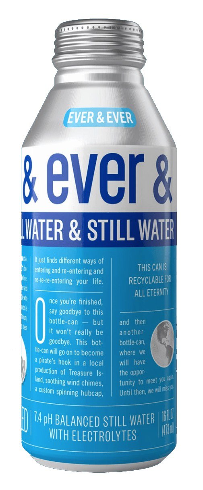

Thanks to those who recycle, nearly 75% of all the aluminum ever produced is still in use. When used properly and recycled, this bottle-can may go on to become wind chimes, a flagpole, a filing cabinet, a pie tin, and then Ever & Ever once again.
products&products&products&products&
Our water comes from infinitely renewable sources, undergoes a purification process called reverse osmosis, is packed with electrolytes, and has a pH balance of 7.4. Because your body, much like our planet, relies on clean, sustainable water
Similar to its non-carbonated counterpart, our crisp sparkling water comes from infinitely renewable sources, and is also packed with electrolytes. You may not be able to notice the extremely nuanced taste of electrolytes, but your body can.
aluminum&aluminum&aluminum&aluminum
Ever & Ever is a love letter to aluminum, the everlasting metal that has been around for approximately forever and will be around for approximately another forever, taking whatever shape humans require of it, silently, selflessly, without ego or waste, unlike plastic, which is a freeloader that’s completely comfortable lying around in an ocean or landfill doing nothing.